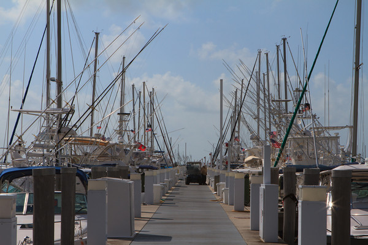

<html>
    <head>
        <title>Assignment 2</title>
        <style>
            body {
                min-height: 460px; background-color: #1c1c1c;
                font: 14px Arial, Helvetica;
            }
            #cc_viewport {
                margin: auto; margin-top: 40px; padding: 5px;
                width: 600px; height: 450px;
                border:  1px solid #5c5c5c; border-radius: 5px;
                -moz-box-shadow: 0px 0px 25px rgba(255,255,255,.5);
                position: relative;

                overflow: hidden;
            }
            #cc_keyPad {
                width: 598px; height: 50px;
                position: absolute; bottom: 5px; left:5px;
                border: 1px solid #3f3f3f;
                border-bottom-left-radius: 5px; border-bottom-right-radius: 5px; background-color: #1f1f1f;
            }
            #cc_navBar { text-align: center; margin-top: 15px; color: #5c5c5c; }
            #cc_navBar a { color: #5c5c5c; text-decoration: none; text-shadow: -1px -1px #000; margin: 0 15px; }
            img {float: left;}

            #viewport {
              padding: 0px;
            }
        </style>
    </head>
    <body>
      <!-- # view port think of it as photo album -->
        <!-- <div id="viewPort"> -->
            <!-- <div id="carousel"> -->
              <!--  -->
              <!--  -->
              <!--  -->
              <!--  -->
            <!-- </div> -->
            <!-- <div id="keyPad"> -->
                <!-- <div id="navBar"><a href="prev">Prev</a>|<a href="next">Next</a></div> -->
            <!-- </div> -->
        <!-- </div> -->
        <!-- line 54 myPhotoCarousel match the id here -->
        <div id="myPhotoCarousel"></div>

    </body>
    <!-- insert jQuery JS script closing body, /html tag -->
    <script type = "application/javascript" src="js/jquery-3.2.1.min.js"></script>
    <script type = "application/javascript" src="js/coolcarousel.js"></script>

    <script type = "application/javascript">
    // what we are giving as option is json obj
    // user pass in json objet of lists
    // saved under glitch glitch.com/edit/#!/immense-beer
    $("#myPhotoCarousel").coolcarousel({
        "images":[
                    "https://cdn.glitch.com/6ae346b9-0e83-4009-838f-a0b3c61d7fce%2Fimage3.jpg?1508555323493","https://cdn.glitch.com/6ae346b9-0e83-4009-838f-a0b3c61d7fce%2Fimage4.jpg?1508555323639", 
                    "https://cdn.glitch.com/74002946-1d24-4468-a926-f69425ec9e28%2Fimage1.jpg?1509158967822",
                    "https://cdn.glitch.com/74002946-1d24-4468-a926-f69425ec9e28%2Fimage2.jpg?1509158967922"
// "images/image1.jpg",
// "images/image2.jpg",
// "images/image3.jpg"


        ]

        // if you want from your computer
        // "images":[
        //     "images/img1.jpg",
				// ]
				
				// from server
				// "images": ["http://localhost:0000/images/images1.jpg"]
				// Remember to separate by comma
    });

/*
        var individualImageWidth = 600;

        $("#carousel")
          .width(individualImageWidth * 4)
          .css("position", "absolute");
        
        // picture frame viewPort overflowing width 600 hides
        $("#viewPort").css("overflow", "hidden");

        $("#keyPad a[href='next']").on("click", function (e) {
            // when click href link doesn't open disable href function
            e.preventDefault();
            // every click 600px width movement
            // find the #carousel left position, parseInt() to get rid of px and get int
            var carouselLeftCoordinate = parseInt($("#carousel").css("left")); 

            // when you arrive at the last pic, $("#carousel").css("left") is -1800px
            //  therefore if -1500 px you are not yet at the last pic left position
            if(carouselLeftCoordinate > -1500){
                $("#carousel").css("left", carouselLeftCoordinate - individualImageWidth);
            }
        });

        $("#keyPad a[href='prev']").on("click", function (e) {
            // when click href link doesn't open disable href function
            e.preventDefault();
            // every click 600 width movement
            // find the #carousel left position
            var carouselLeftCoordinate = parseInt($("#carousel").css("left")); 

            // when you arrive at the last pic, $("#carousel").css("left") is 0 px
            //  pic is moving to left to show more pic from right it needs to be less than 
            if(carouselLeftCoordinate < 0){
                $("#carousel").css("left", carouselLeftCoordinate + individualImageWidth);
            }
        });
*/

    </script>
</html>